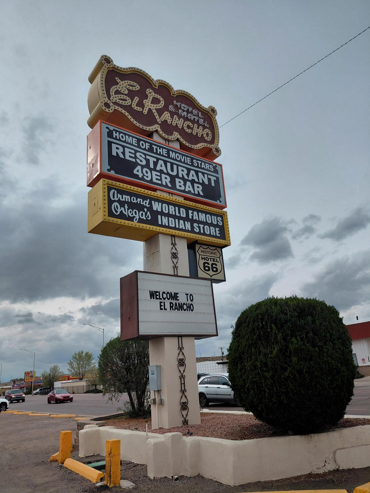

El Rancho
The Historic El Rancho Hotel is a legendary Route 66 landmark in Gallup, known as the "Home of the Movie Stars". Opened in 1936 by the brother of film director D.W. Griffith, it served as a base for Hollywood casts and crews filming Westerns in the surrounding desert. Today, it is a National Historic Landmark that retains its rustic, "Old West" charm through its grand lobby, split-log stairways, and massive stone fireplace.